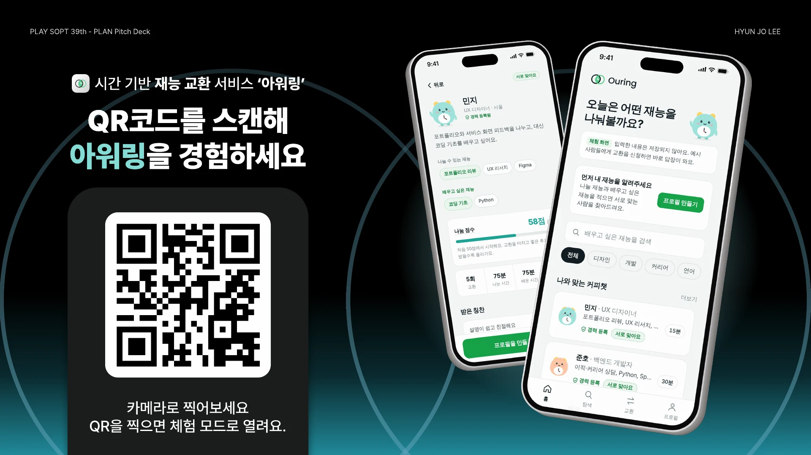
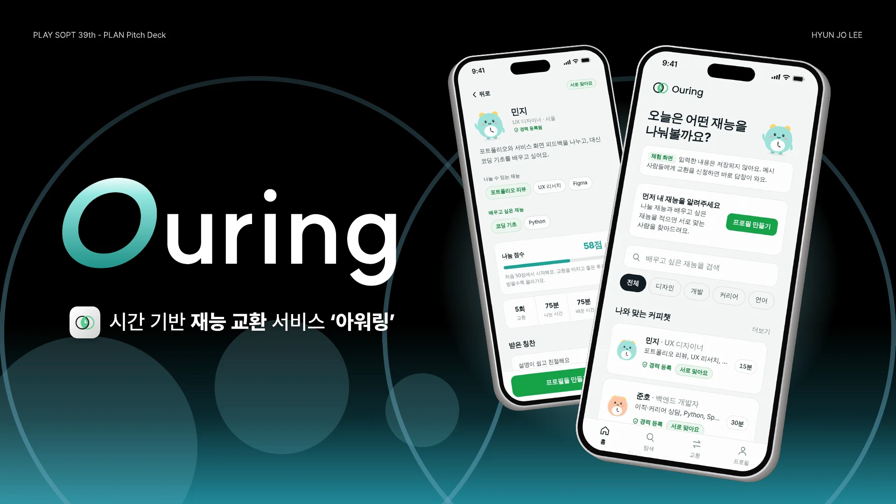
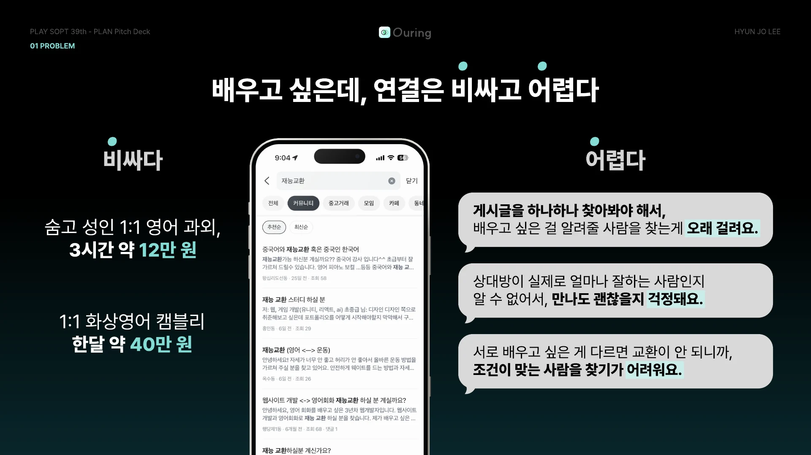
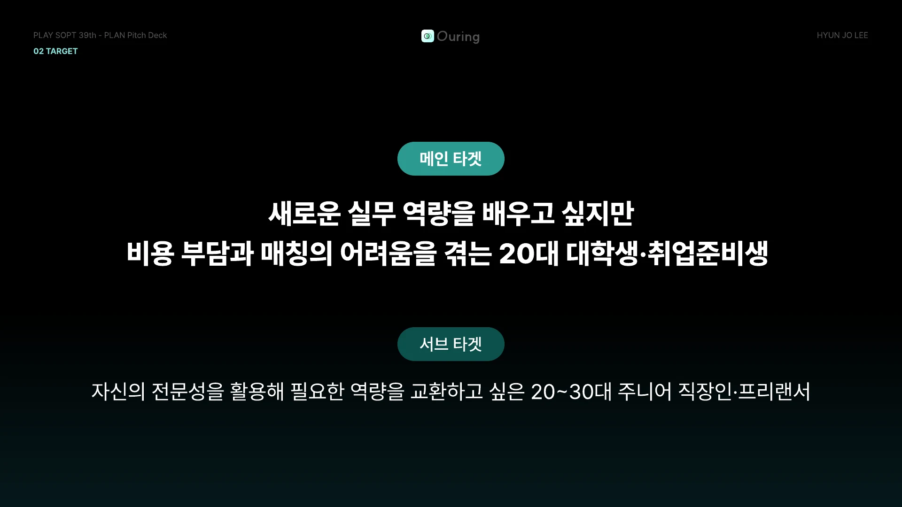
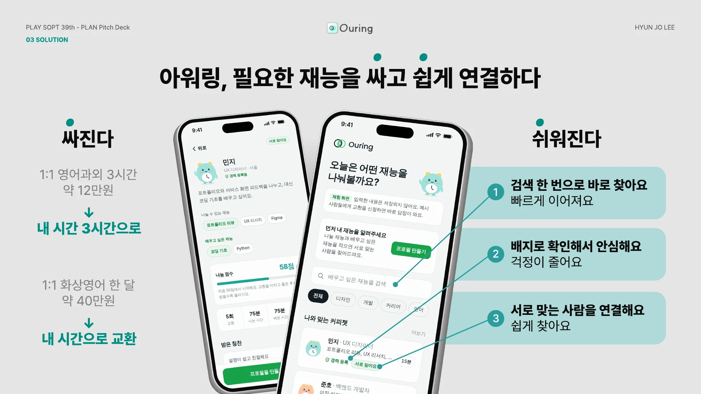
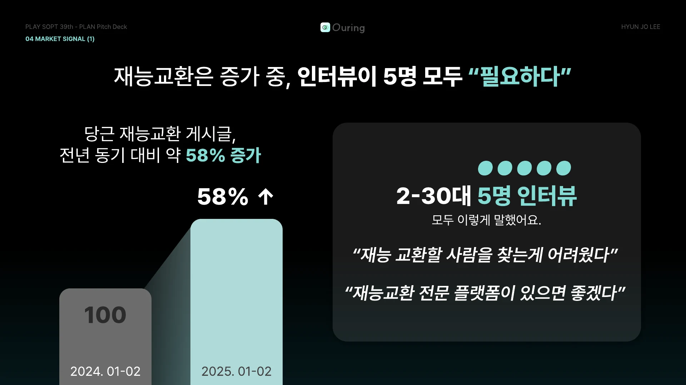
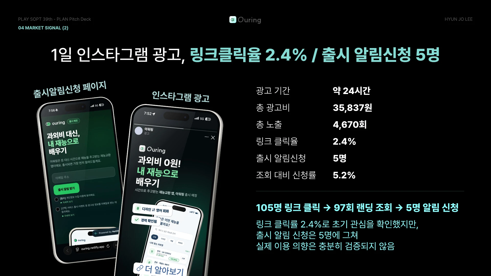
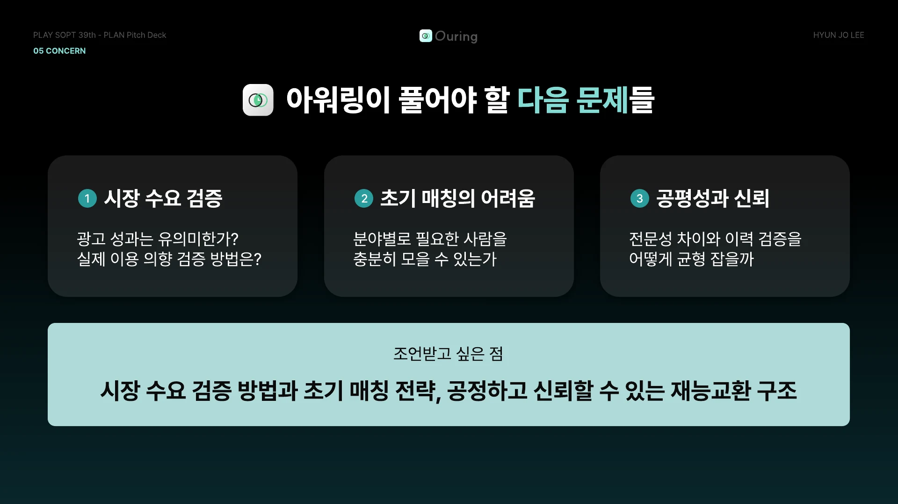
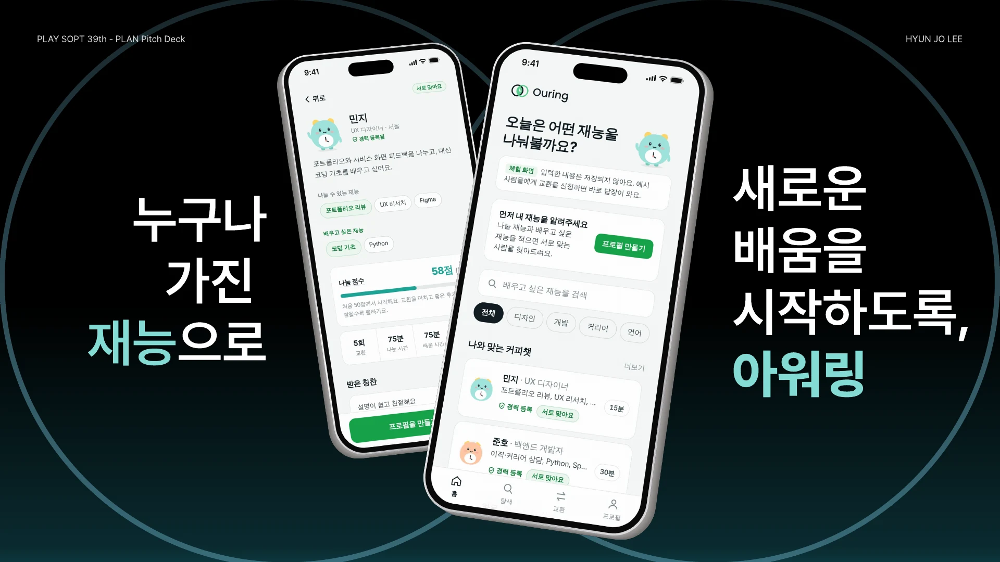

PLAY SOPT 39th - PLAN Pitch Deck. 시간 기반 재능 교환 서비스 '아워링'. QR코드를 스캔해 아워링을 경험하세요. 카메라로 찍어보세요. QR을 찍으면 체험 모드로 열려요. HYUN JO LEE


비싸다: 숨고 성인 1:1 영어 과외 3시간 약 12만 원, 1:1 화상영어 캠블리 한달 약 40만 원. 어렵다: 게시글을 하나하나 찾아봐야 해서 배우고 싶은 걸 알려줄 사람을 찾는게 오래 걸려요. 상대방이 실제로 얼마나 잘하는 사람인지 알 수 없어서 만나도 괜찮을지 걱정돼요. 서로 배우고 싶은 게 다르면 교환이 안 되니까 조건이 맞는 사람을 찾기가 어려워요.

메인 타겟: 새로운 실무 역량을 배우고 싶지만 비용 부담과 매칭의 어려움을 겪는 20대 대학생·취업준비생. 서브 타겟: 자신의 전문성을 활용해 필요한 역량을 교환하고 싶은 20~30대 주니어 직장인·프리랜서.

싸진다: 1:1 영어과외 3시간 약 12만원 → 내 시간 3시간으로. 1:1 화상영어 한 달 약 40만원 → 내 시간으로 교환. 쉬워진다: 1 검색 한 번으로 바로 찾아요. 2 배지로 확인해서 안심해요. 3 서로 맞는 사람을 연결해요.

당근 재능교환 게시글, 전년 동기 대비 약 58% 증가 (2024.01-02 대비 2025.01-02). 2-30대 5명 인터뷰: "재능 교환할 사람을 찾는게 어려웠다", "재능교환 전문 플랫폼이 있으면 좋겠다".

광고 기간 약 24시간, 총 광고비 35,837원, 총 노출 4,670회, 링크 클릭율 2.4%, 출시 알림신청 5명, 조회 대비 신청률 5.2%. 105명 링크 클릭 → 97회 랜딩 조회 → 5명 알림 신청.

1 시장 수요 검증, 2 초기 매칭의 어려움, 3 공평성과 신뢰. 조언받고 싶은 점: 시장 수요 검증 방법과 초기 매칭 전략, 공정하고 신뢰할 수 있는 재능교환 구조.
